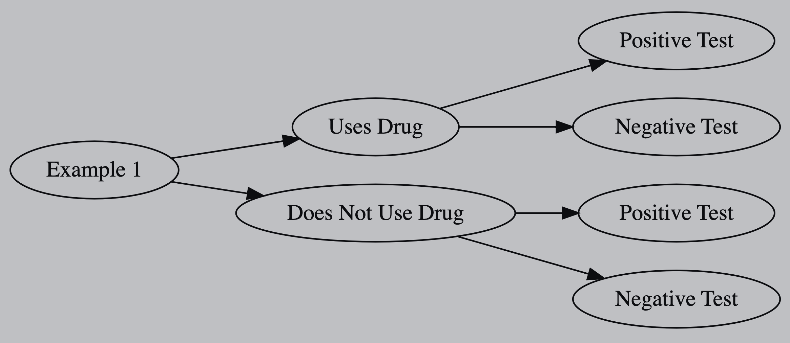

Show code
library(data.tree)
# install.packages("DiagrammeR")
library(DiagrammeR)October 18, 2021
In this post I wanted to create a tree diagram based off my Statistics-461 Notes.

1. Set-UpThis example is from W3-D5 Example 1 of my Statistics-461 Notes, and uses the data.tree package which can create a multiple node object.
2. Creating a Node ObjectAll trees are constructed by tying together Node object, so to start I will create a new Node object for example 1.
For example 1 we suppose that 1% of the population uses a certain drug. So next I want to AddChild to ex1 to show those who use the drug (d) and do not use the drug (dc, where c means compliment).
Now let t be tests positive for the disease. The drug manufacturer claims that \(P(T|D^C)=0.015\) and \(P(T^C|D)=0.005\). Which means that:
\(P(T^C|D^C)=1-P(T|D^C)=1-0.015=0.985\) and
\(P(T|D)=1-P(T^C|D)=1-0.005=0.995\)
So lets add another layer of nodes to example 1.
And then print what information we have.
levelName p
1 Example 1 NA
2 ¦--Uses Drug 0.010
3 ¦ ¦--Positive Test 0.995
4 ¦ °--Negative Test 0.005
5 °--Does Not Use Drug 0.990
6 ¦--Positive Test 0.015
7 °--Negative Test 0.985If the probability column shows as a percentages we can use the SetFormat() function to set the decimal to 3 places.
And print the information we have.
3. Conditional ProbabilityGiven a positive test, we can find the probability that a person actually uese the drug with the following equation:
\(\begin{equation}\label{a}\begin{split}P(D|T) &= \frac{P(T|D)\times P(D)}{[P(T|D)\times P(D)]+[P(T|D^C)\times P(D^C)]}\\&=\frac{(0.995)(0.01)}{(0.995\times 0.01)+(0.015\times 0.99)}\\&=\frac{199}{496}\\&\approx 0.4012\end{split}\end{equation}\)
4. Plotting a Tree DiagramLastly we can use the plot() function to print a Tree Diagram:
To visualize the tree diagram from left to right instead of top to bottom we can use the SetGraphStyle() function as shown below.
---
title: "Tree Diagrams"
date: "2021-10-18"
categories: [Original, R, Data Visuals]
toc: true
draft: false
format:
html:
code-fold: true
code-summary: "Show code"
code-tools: true
---
In this post I wanted to create a tree diagram based off my [Statistics-461 Notes](https://rbolt13.github.io/stat461/).

# `1. Set-Up`
This example is from [W3-D5 Example 1](https://rbolt13.github.io/stat461/#Example_1) of my [Statistics-461 Notes](https://rbolt13.github.io/stat461/), and uses the [data.tree](https://cran.r-project.org/web/packages/data.tree/vignettes/data.tree.html) package which can create a multiple node object.
```{r load library, warning=FALSE, message=FALSE}
library(data.tree)
# install.packages("DiagrammeR")
library(DiagrammeR)
```
# `2. Creating a Node Object`
All trees are constructed by tying together Node object, so to start I will create a new Node object for example 1.
```{r create node}
ex1 <- data.tree::Node$new("Example 1")
```
For example 1 we suppose that 1% of the population uses a certain drug. So next I want to `AddChild` to ex1 to show those who use the drug (d) and do not use the drug (dc, where c means [compliment](https://guides.fscj.edu/Statistics/complement#:~:text=The%20complement%20of%20an%20event,P(A%20%E2%88%A9%20B).)).
```{r add children1}
d <- ex1$AddChild("Uses Drug", p = 0.01)
dc <- ex1$AddChild("Does Not Use Drug", p = 0.99)
```
Now let t be tests positive for the disease. The drug manufacturer claims that $P(T|D^C)=0.015$ and $P(T^C|D)=0.005$. Which means that:
$P(T^C|D^C)=1-P(T|D^C)=1-0.015=0.985$ and
$P(T|D)=1-P(T^C|D)=1-0.005=0.995$
So lets add another layer of nodes to example 1.
```{r add children2}
t <- d$AddChild("Positive Test", p = 0.995)
tc <- d$AddChild("Negative Test", p = 0.005)
t <- dc$AddChild("Positive Test", p = 0.015)
tc<- dc$AddChild("Negative Test", p = 0.985)
```
And then print what information we have.
```{r print}
base::print(ex1, 'p')
```
If the probability column shows as a percentages we can use the `SetFormat()` function to set the decimal to 3 places.
```{r set format}
data.tree::SetFormat(ex1, "p", formatFun = data.tree::FormatFixedDecimal(3))
```
And print the information we have.
```{r print 2}
base::print(ex1, 'p')
```
# `3. Conditional Probability`
Given a positive test, we can find the probability that a person actually uese the drug with the following equation:
$\begin{equation}\label{a}\begin{split}P(D|T) &= \frac{P(T|D)\times P(D)}{[P(T|D)\times P(D)]+[P(T|D^C)\times P(D^C)]}\\&=\frac{(0.995)(0.01)}{(0.995\times 0.01)+(0.015\times 0.99)}\\&=\frac{199}{496}\\&\approx 0.4012\end{split}\end{equation}$
# `4. Plotting a Tree Diagram`
Lastly we can use the `plot()` function to print a Tree Diagram:
```{r print 3}
base::plot(ex1)
```
To visualize the tree diagram from left to right instead of top to bottom we can use the `SetGraphStyle()` function as shown below.
```{r print 4}
data.tree::SetGraphStyle(ex1, rankdir = "LR")
base::plot(ex1)
```